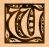

|

henever thou would'st call forth Those from Outside, thou must mark well the seasons and times in which the spheres do intersect and the influences flow from the Void Thou must observe the cycle of the Moon, the movements of the planets, the Sun's course through the Zodiac and the rising of the constellations. Ye Ultimate Rites shall be performed only in the seasons proper to them, these be: at Candlemas (on the second day of the second month), at Beltane (on the Eve of May), at Lammas (on the first day of the eighth month), at Roodmas (on the fourteenth day of the ninth month), and at Hallowmas (on November Eve). Call out to dread Azathoth when the Sun is in the sign of the Ram, the Lion, or the Archer; the Moon decreasing and Mars and Saturn conjoin. Mighty Yog-sothoth shall rise to ye incantations when Sol has entered the fiery house of Leo and the hour of Lammas be upon ye. Evoke ye terrible Hastur on Candlemas Night, when Sol is in Aquarius and Mercury in trine. Supplicate Great Cthulhu only at Hallowmas Eve when the Sun abides within the House of the Scorpion and Orion riseth. When All Hallows falls within the cycle of the new Moon the power shall be the strongest. Conjure Shub-Niggurath when the Beltane fires glow upon the hills and the Sun is in the Second House, repeating the Rites of Roodmas when ye Black One appeareth.
|
 f Ye Times and Ye Seasons to be
Observed
f Ye Times and Ye Seasons to be
Observed
 Book of Summonning Book of Summonning
|
To
Raise up Ye Stones  |